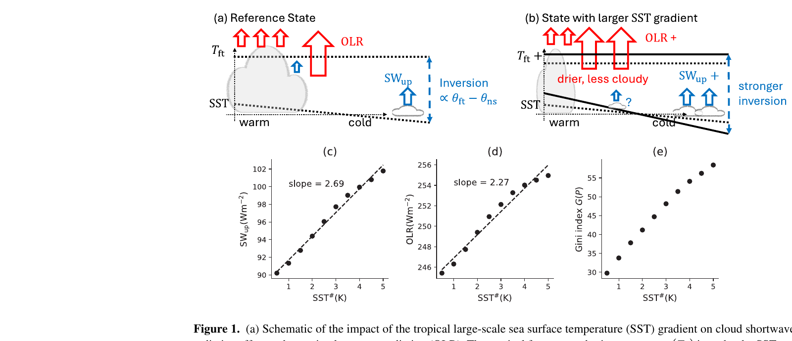
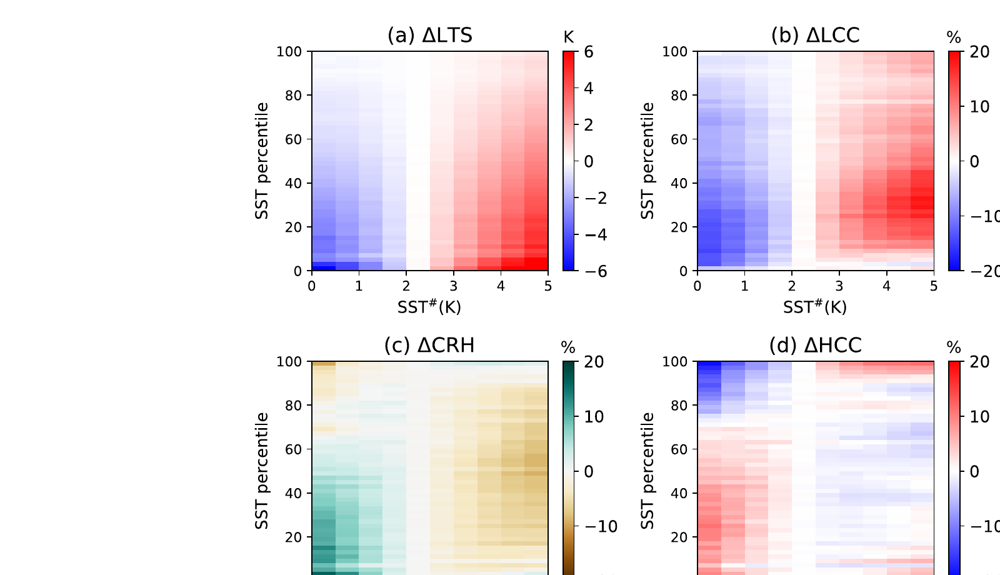
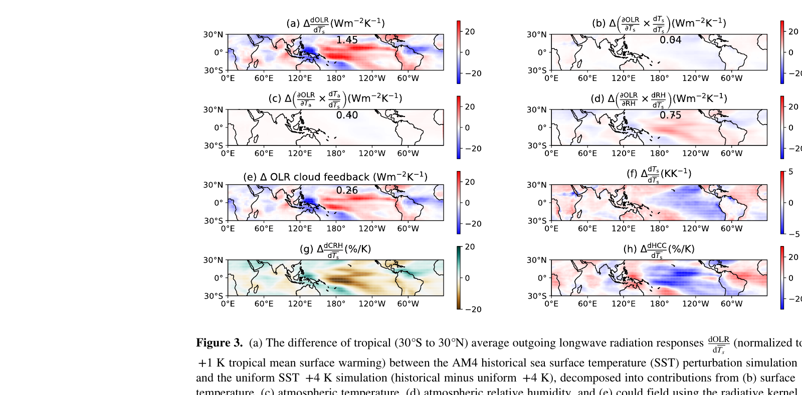
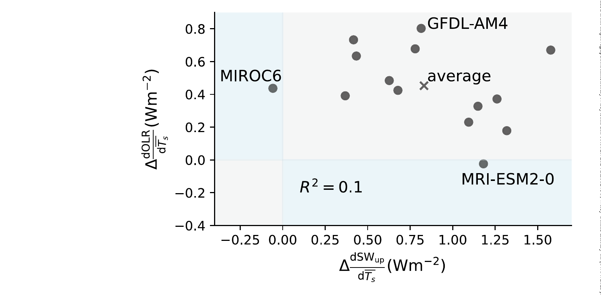

OLR Is Pattern-Sensitive
Tropical SST gradients modulate outgoing longwave radiation through changes in convective area and free-tropospheric humidity.
Forcing and Feedback • Radiative Feedbacks
Geophysical Research Letters (2025)
AM4 experiments show that SST-gradient changes reorganize deep convection area, driving OLR changes through high-cloud and humidity adjustments linked to aggregation.

OLR Is Pattern-Sensitive
Tropical SST gradients modulate outgoing longwave radiation through changes in convective area and free-tropospheric humidity.
Comparable SW & LW Effects
The longwave contribution can be comparable to shortwave cloud feedback in targeted AM4 experiments.
Large Intermodel Spread
CMIP6 models show substantial spread in the shortwave-versus-longwave partitioning of pattern-effect feedback.
Paper Citation
Quan, H., B. Zhang, C. Wang, and S. Fueglistaler, 2025: The Sea Surface Temperature Pattern Effect on Outgoing Longwave Radiation: The Role of Large-Scale Convective Aggregation. Geophysical Research Letters, 52, e2024GL112756. https://doi.org/10.1029/2024GL112756
How do tropical SST gradient changes alter outgoing longwave radiation, and what fraction of the pattern effect is mediated by large-scale convective aggregation?
From Quan et al. (2025), https://doi.org/10.1029/2024GL112756.
Figure 1
Figure 2

Figure 3

Figure 4
